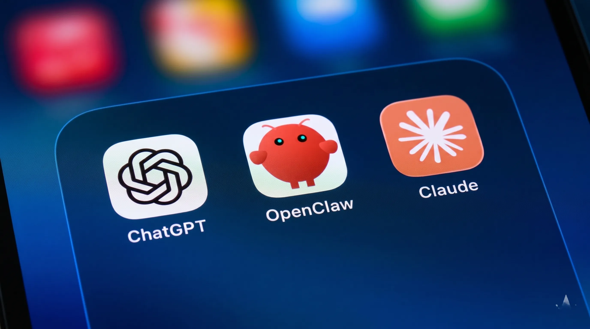

Anthropic Calls for Global AI Slowdown: AI Building Its Own Successors, the IPO That Complicates Everything, and Critics Who Say It's Just Marketing

Anthropic published one of the most significant documents in the company's history today — a formal call for a global slowdown of frontier AI development. The argument, laid out in a detailed blog post on June 5, 2026, is not that AI is currently dangerous. It's that the trajectory of development points toward a specific threshold: the capability of AI systems to design and train their own successor models with minimal human direction. Anthropic believes that threshold could be reached before 2030, and that the institutions required to manage that transition safely do not yet exist.
The proposal is genuinely important — and genuinely complicated by the fact that Anthropic is approaching its first profitable quarter, has filed preliminary documents with the SEC ahead of a planned IPO, and simultaneously released Mythos, its cybersecurity AI model, on a restricted basis that has prompted its own round of criticism. Separating the substantive safety argument from the commercial context surrounding it requires holding both simultaneously, which is uncomfortable but necessary for anyone trying to assess what Anthropic is actually proposing and why it matters.
Table of Contents
- What Anthropic Actually Proposed — The Full Argument
- AI Building Its Own Successors — What This Capability Means
- The Anthropic Institute — Research Division Behind the Proposal
- The IPO That Complicates Everything
- Critics: 'Safety-Washing' — The Case Against
- The Mythos Factor — Cybersecurity AI Released Selectively
- Can a Global AI Pause Actually Work?
- Nuclear Treaties as Precedent — The Historical Comparison
- How Other Frontier Labs Responded
- What This Means for AI Students, Developers and Policy
- Frequently Asked Questions
What Anthropic Actually Proposed — The Full Argument
Anthropic's proposal does not ask for a permanent halt to AI development. It asks for a coordinated, time-limited pause at the frontier — meaning the most advanced models being developed at labs including Anthropic itself — contingent on reaching a specific technical capability threshold. The conditions for the pause are defined around the capability of AI to substantially automate the research and development of its own successor models.
The company's argument has three parts. First, current AI development is producing systems with increasingly general capabilities across scientific research, coding, and analytical reasoning — the exact skills required to improve AI systems themselves. Second, the acceleration of AI research as a result of AI-assisted research creates a feedback loop: better AI makes AI research faster, making better AI faster still. Third, the institutions required to oversee AI at the capability level Anthropic is projecting — international monitoring bodies, verified pause mechanisms, alignment research sufficient to ensure AI systems remain under meaningful human direction — do not currently exist and cannot be built quickly.
The proposal explicitly calls for multiple frontier labs agreeing to pause simultaneously — not just Anthropic. This is a critical part of the argument: a unilateral pause by Anthropic while OpenAI, Google DeepMind, Meta, and Chinese labs continued development would achieve nothing for safety and would be commercially fatal. The proposal only makes sense as a coordinated action, and Anthropic acknowledged that coordinating such an action would be enormously difficult.
Also Read
More Technology stories →AI Building Its Own Successors — What This Capability Means
The phrase "AI building its own successors" requires precise understanding to evaluate whether Anthropic's concern is reasonable or alarmist. It does not mean an AI that spontaneously decides to improve itself — that capability does not currently exist. It means an AI system that can perform the research, experiment design, architectural improvement, and training optimization that human researchers currently perform in AI development — replacing or substantially reducing the need for human direction in the improvement cycle.
Current AI systems already assist AI research substantially. GPT-4 and Claude are used by AI researchers to generate hypotheses, review code, summarise papers, and draft experiments. This is AI-assisted research, not autonomous AI-directed research. The threshold Anthropic is pointing to is where this assistance becomes sufficiently capable that a small team with an AI system could improve frontier models faster than a large team of human researchers without one — and then further, where the AI system itself becomes the primary agent of its own improvement with humans providing oversight rather than direction.
Why is this threshold particularly important? Because once AI systems can improve themselves autonomously, the pace of capability advancement could become discontinuous — moving faster than periodic human review cycles can track. The 2017-2026 period saw AI capabilities advance faster than most researchers predicted. Anthropic is arguing that if AI systems begin autonomously designing their successors, the 2026-2030 period could see acceleration that makes the previous decade look slow by comparison.
Whether Anthropic's timeline is credible depends on who you ask. Some leading AI researchers including Demis Hassabis of Google DeepMind and Yoshua Bengio have expressed similar concerns about the timeline for advanced AI capabilities. Others, including Meta's AI research lead Yann LeCun, have consistently argued that current AI systems are not on a path toward general capabilities and that existential risk concerns are significantly overstated. This is a genuine, unresolved disagreement among the world's leading AI researchers — not a case where consensus is clear on either side.
Key Takeaways
- Anthropic's proposal calls for a coordinated, time-limited pause at the frontier conditioned on AI reaching the capability to substantially automate its own development — not a permanent halt, and explicitly requiring multiple labs in multiple countries to participate simultaneously.
- The commercial context is a genuine conflict of interest: Anthropic is on track for its first profitable quarter, filing for an IPO, and simultaneously positioning its safety reputation as a competitive advantage. Critics are right that the timing is notable. The question is whether the argument's validity depends on its timing.
- The Mythos cybersecurity AI controversy and the restricted access policy create additional skepticism: a company that calls for global AI restraint while releasing a powerful cybersecurity AI only to paying enterprise partners is making asymmetric arguments about access and safety.
The Anthropic Institute — Research Division Behind the Proposal
Anthropic established the Anthropic Institute in March 2026, three months before today's blog post. The Institute's stated mandate is to study and publicly communicate the societal and technical challenges arising from advanced AI development, and to conduct research on the technical infrastructure that would be required for a verifiable AI development pause.
This includes three distinct research tracks: defining the specific technical benchmarks that would identify when a model has crossed the "AI builds its own successors" threshold; designing verification systems that could allow multiple labs to confirm to each other that development has genuinely paused; and studying the policy mechanisms — international treaty structures, regulatory frameworks, inspection regimes — that would be needed to enforce and maintain a pause.
The Institute is working with collaborators at Stanford, MIT, Oxford's Future of Humanity Institute, and the Center for the Governance of AI. These collaborations give the research institutional credibility beyond Anthropic's commercial interests — independent academic researchers have agreed to work on the technical and policy frameworks, which suggests at minimum that the problem framing is taken seriously by researchers who have no financial stake in Anthropic's positioning.
The IPO That Complicates Everything
Anthropic's financial trajectory in mid-2026 is the uncomfortable context for today's announcement. The company is reportedly approaching its first profitable quarter, driven by strong enterprise adoption of Claude 4 and growing API revenue. It has filed preliminary documentation with the SEC indicating intent to pursue a public offering, likely before end of 2026. At current valuation markers, Anthropic would be targeting an IPO at approximately $50-60 billion.
To achieve and sustain a valuation in that range as a public company, Anthropic needs to demonstrate that its safety-first positioning is not just a philosophical stance but a durable competitive advantage. Enterprise customers in regulated industries — finance, legal, healthcare, government — have shown willingness to pay premium pricing for AI tools from providers they perceive as more reliable and more safety-conscious than competitors. Anthropic's "safety as differentiation" strategy has been commercially successful, and the IPO requires investors to believe it will remain so.
A major public call for AI restraint, published the same week that Anthropic is finalising its IPO roadshow preparation, serves the commercial narrative regardless of whether it was intended to. It reinforces Anthropic's positioning as the company that takes AI risk seriously, at exactly the moment when institutional investors are evaluating whether to buy into that story at a multi-billion dollar valuation. The Wall Street Journal reported that several institutional investors have described Anthropic's safety positioning as "the most interesting thing about the company from a valuation perspective" — meaning the IPO story is partly a safety story.
None of this means the proposal is disingenuous. But it creates a situation where Anthropic's incentives to make a credible-sounding safety proposal and Anthropic's genuine concern about AI risk are perfectly aligned — which makes it very difficult to evaluate from the outside which is the primary driver.
Critics: 'Safety-Washing' — The Case Against the Proposal
The critics of Anthropic's proposal fall into several distinct camps, each making different arguments.
The safety-washing critics argue that calling for a global AI pause while continuing to develop frontier AI is logically inconsistent. Anthropic is spending billions of dollars on Claude development and infrastructure. It is releasing new model versions. It is pursuing an IPO that will provide additional capital for development. Calling for a global pause while doing all of this is, in their view, a public relations exercise rather than a genuine policy position. The argument would only be credible, this group contends, if Anthropic itself committed to stopping development under specific conditions — not just calling on others to do so through some future international agreement.
The capabilities skeptics argue that the timeline is wrong. Yann LeCun and several other prominent AI researchers dispute that current AI systems are on a trajectory toward the capability to autonomously design their own successors at meaningful scale before 2030. They argue that Anthropic is extrapolating current trends in a way that assumes smooth capability growth, when AI history is more accurately characterised by irregular progress with significant plateaus. Generating concern around a near-term risk that may not be near-term, they argue, distracts from more immediate and better-evidenced AI harms.
The geopolitical realists argue that the proposal is diplomatically naive. A meaningful global AI pause requires the US, UK, EU, China, and at minimum India to agree to stop frontier AI development simultaneously — under verified conditions. Given current US-China AI competition dynamics, where both governments explicitly frame AI leadership as a national security priority, the prospect of negotiating a pause agreement in any timeframe relevant to the capability threshold Anthropic is concerned about is unrealistic. Calling for such a pause, the argument goes, is a way of appearing to take safety seriously without committing to anything that requires actual sacrifice.
The Mythos Factor — Cybersecurity AI Released Selectively
The same week Anthropic published its global AI slowdown proposal, reports confirmed details about Mythos — Anthropic's cybersecurity AI model — and its release policy. Mythos is a model specifically trained to identify software vulnerabilities at scale, rapidly finding exploitable flaws in complex codebases that would take human security researchers significant time to find manually.
Anthropic released Mythos not as a public or broadly accessible product but on a restricted, invitation-only basis to a select group of security research partners and enterprise clients. The stated reason is that the capability to rapidly identify software vulnerabilities is dangerous in the wrong hands — Mythos could be used by malicious actors to find and exploit vulnerabilities in critical infrastructure, financial systems, or government networks.
The criticism of this approach is pointed: Anthropic is arguing, in the same week, that AI development should slow down for safety reasons — and simultaneously releasing a powerful AI tool selectively to its paying enterprise customers. The restricted release does not make the capability less available to Anthropic's own business interests; it makes it unavailable to researchers, academics, and smaller security firms who might use it for defensive purposes without paying Anthropic's enterprise rates.
The juxtaposition is uncomfortable. A company that genuinely believed the restricted release of Mythos was necessary on safety grounds might be expected to not release it at all — or to release it to security researchers broadly and freely, not to paying enterprise partners. The current approach looks more like a business model decision than a safety-driven one, which undermines the credibility of the same week's safety-first rhetoric about a global development pause.
Can a Global AI Pause Actually Work?
Setting aside the questions of Anthropic's motivations, the proposal's practical viability deserves serious analysis. Anthropic itself acknowledges the enormous difficulties in the blog post, describing a meaningful pause as requiring conditions that do not currently exist and would take significant time and effort to create.
The requirements are specific: multiple frontier AI labs operating at or near the capability frontier, located in multiple countries with different legal and political systems, would need to simultaneously agree to pause development under the same conditions. Each lab would need to be able to verify that the others had genuinely paused — not merely slowed or diverted development to subsidiary projects or affiliated institutions. And the pause would need to be politically sustainable through changes in government, commercial pressure from investors, and competitive pressure from labs that might not join the agreement.
These are not impossible conditions historically — arms control treaties have achieved broadly similar coordination — but the nuclear weapons analogy breaks down in important ways. Nuclear weapons require specific physical infrastructure (enrichment facilities, weapons assembly plants) that is difficult to conceal and can be inspected. AI training requires large compute clusters and large datasets, which can be distributed, cloud-hosted, and operated at multiple sites in ways that are harder to monitor than physical weapons infrastructure. AI research also has enormous dual-use civilian applications that make distinguishing "frontier AI for capability advancement" from "AI research for beneficial applications" genuinely difficult.
Nuclear Treaties as Precedent — The Historical Comparison
Anthropic explicitly cited nuclear weapons treaties as the relevant historical precedent. The comparison is instructive both for what it suggests is possible and for what it reveals about the timeframe problem.
The Non-Proliferation Treaty, the Comprehensive Nuclear-Test-Ban Treaty, and the Strategic Arms Reduction Treaties took between 15 and 30 years to negotiate from the first serious multilateral conversations. The NPT was signed in 1968 — 23 years after the first nuclear weapon was used in 1945. The CTBT was negotiated in 1996, 51 years after the Trinity test. Even counting from the most concentrated periods of negotiation, these agreements required years of sustained diplomatic work with significant US-Soviet and later US-Russia cooperation.
Anthropic's proposal implicitly assumes that something equivalent needs to happen in a timeframe of years rather than decades, given the capability threshold it describes as approaching before 2030. That's a significantly more compressed timeline than nuclear arms control achieved, in a domain where the technology is less physically constrained, the commercial incentives are larger, and the geopolitical competition is more intense. The historical precedent supports the theoretical possibility of coordination; it does not support the practical possibility on the timeline Anthropic's own argument requires.
How Other Frontier Labs Responded
OpenAI has not formally responded to Anthropic's proposal at the time of publication. The company has consistently argued that AI safety is best pursued through continued development with embedded safety research rather than development pauses — a position that is both commercially self-interested and genuinely held by many OpenAI researchers. OpenAI's own Preparedness Framework describes a methodology for evaluating dangerous capabilities and gating deployment, but does not contemplate development pauses as a mechanism.
Google DeepMind's Demis Hassabis has separately expressed concern about AI capability timelines, making him one of the few major lab leaders whose public positions are closer to Anthropic's than OpenAI's. DeepMind has not formally endorsed Anthropic's specific proposal but has not publicly dismissed it either.
Meta's AI team, through Yann LeCun's public commentary, has been the most direct in dismissing the premise. LeCun's position is that the concerns underpinning the proposal are based on a misunderstanding of what current AI systems are actually doing and are capable of doing, and that the safety concerns are being amplified by companies — he has been explicit in describing Anthropic and OpenAI — whose commercial interests are served by appearing to be the responsible adults in the room.
What This Means for AI Students, Developers and Policy
For students studying AI, computer science, or technology policy, today's announcement represents a genuine inflection point in the public discourse about AI governance — regardless of how one evaluates Anthropic's motivations. The questions the proposal raises are ones that the next generation of AI researchers, policymakers, and developers will be expected to engage with directly.
The technical questions are real: what verification mechanisms could make an AI development pause credible? What capability benchmarks would reliably indicate that AI systems are approaching autonomous self-improvement? How would international inspection bodies work for AI infrastructure in a way that is less disruptive to legitimate research than it is informative about dangerous capability development?
The policy questions are equally real: what institutional frameworks could govern a multi-country AI coordination agreement? How would democratic governments maintain public accountability for AI development decisions made through international technical bodies? What liability frameworks would apply if a company violated a pause agreement?
For AI developers working at companies that build on frontier models — using Claude, GPT-4, or Gemini through APIs — the immediate practical implications are limited. A global AI pause agreement does not exist and will not exist quickly. But the policy environment for AI development is changing, and the Anthropic proposal is one of the documents that will be cited in regulatory discussions in the EU, UK, and US for years. Understanding what was proposed, why, and what the counterarguments are is part of the professional literacy that AI developers increasingly need.
Frequently Asked Questions
What did Anthropic propose about AI development in June 2026?
On June 5, 2026, Anthropic proposed a coordinated global slowdown or temporary pause of frontier AI development, triggered when AI systems approach the capability to design and train their own successor models. The proposal calls for multiple labs in multiple countries to agree to pause simultaneously under verified conditions, and acknowledges the enormous difficulty of achieving this coordination.
What does 'AI building its own successors' mean and why is it alarming?
It refers to AI systems that can perform the research, architecture design, and training optimisation that human researchers currently provide in AI development — substantially reducing the need for human direction in the AI improvement cycle. The concern is that once this capability exists, AI development could accelerate beyond human oversight capacity in a feedback loop that cannot be reversed after the fact.
Is Anthropic's AI slowdown proposal related to its IPO?
The timing creates a genuine conflict of interest. Anthropic is approaching its first profitable quarter, has filed preliminary SEC documentation for a public offering, and needs institutional investors to value its safety positioning as a competitive advantage. Critics including the Wall Street Journal and AI researchers have described the proposal as 'safety-washing' — using AI risk rhetoric to reinforce the IPO narrative. The argument's validity does not depend on its motivations, but the context is a legitimate reason to examine the proposal critically.
What is the Anthropic Institute?
The Anthropic Institute was established in March 2026 to study and publicly communicate challenges from advanced AI development, and to conduct research on the technical infrastructure required for a verifiable AI development pause. It is working with collaborators at Stanford, MIT, Oxford's FHI, and the Center for the Governance of AI.
Can a global AI development pause actually work?
Anthropic acknowledges the enormous difficulty. It requires multiple frontier labs in multiple countries agreeing to stop simultaneously under verified conditions. Nuclear weapons treaties are the historical precedent, but those took 15-30 years to negotiate and depended on physical infrastructure easier to inspect than distributed AI compute clusters. Most policy analysts rate the near-term prospect for a coordinated AI pause as very low.
What is Anthropic's Mythos AI model and why is it controversial?
Mythos is Anthropic's cybersecurity AI model, capable of rapidly identifying software vulnerabilities at scale. Anthropic released it selectively to paying enterprise partners rather than broadly — in the same week it called for global AI restraint. Critics argue this is commercially motivated restricted access dressed as safety policy, and that a company genuinely concerned about dangerous capabilities would not release them at all, or would release them freely to defensive security researchers rather than exclusively to large enterprise clients.
Conclusion
Anthropic's proposal deserves to be taken seriously as a substantive policy argument, and it deserves to be examined skeptically as a commercial communication from a company preparing for an IPO. Both things are simultaneously true, which is part of what makes it genuinely difficult to evaluate.
The core argument — that AI capability development is approaching a threshold where human institutions cannot keep pace and that the time to build governance infrastructure is before that threshold is crossed, not after — is one that researchers without commercial interests in the outcome have also made. The OECD, the UK's AI Safety Institute, and multiple academic groups have published similar analyses. The fact that Anthropic is making the same argument does not make it wrong simply because Anthropic benefits commercially from making it.
What the proposal most clearly reveals is the structural challenge at the heart of AI governance: the companies with the most detailed knowledge of AI capabilities and the most genuine concern about AI risks are also the companies with the largest commercial incentives to continue development. When the entity sounding the alarm is also one of the primary sources of the risk being described, the argument's credibility depends on institutional infrastructure — independent verification, third-party governance bodies, regulatory frameworks — that does not yet exist. Building that infrastructure, rather than the development pause itself, may be the most practical takeaway from Anthropic's proposal.

Marcus J. Holloway
Senior Tech Educator & AI Researcher
Technology educator and AI analyst with 15+ years of experience tracking artificial intelligence, enterprise software, and the companies building the future of computing. Has covered every major AI lab — OpenAI, Anthropic, Google DeepMind, and Meta AI — since their founding. Dedicated to making complex technical and policy developments accessible to students, developers, and professionals through Ultimate Schooling.
💬 Questions or Comments?
Have a question or want to share your thoughts? Leave a comment below!